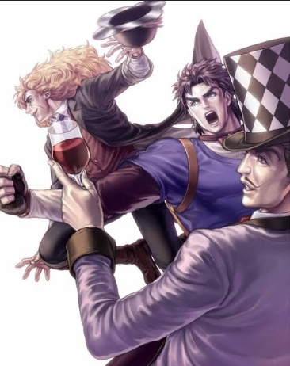
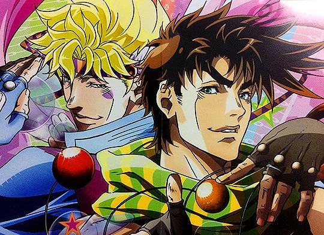
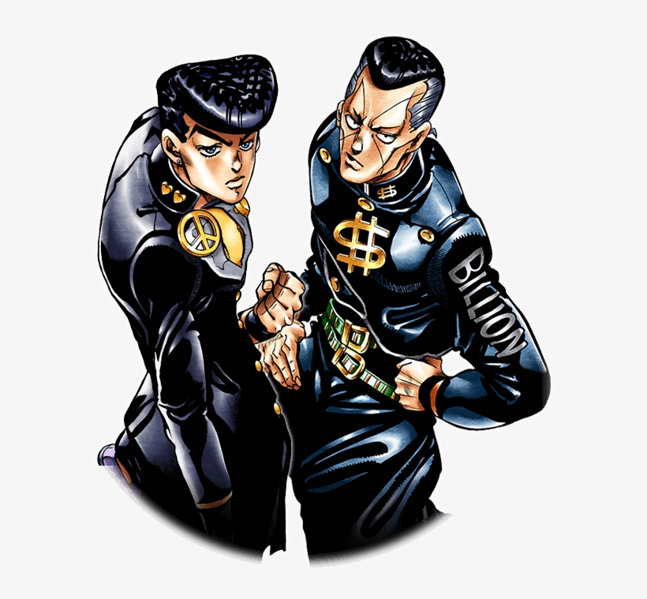
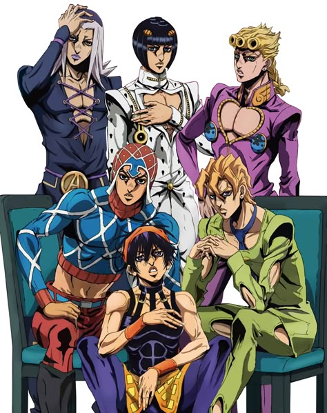
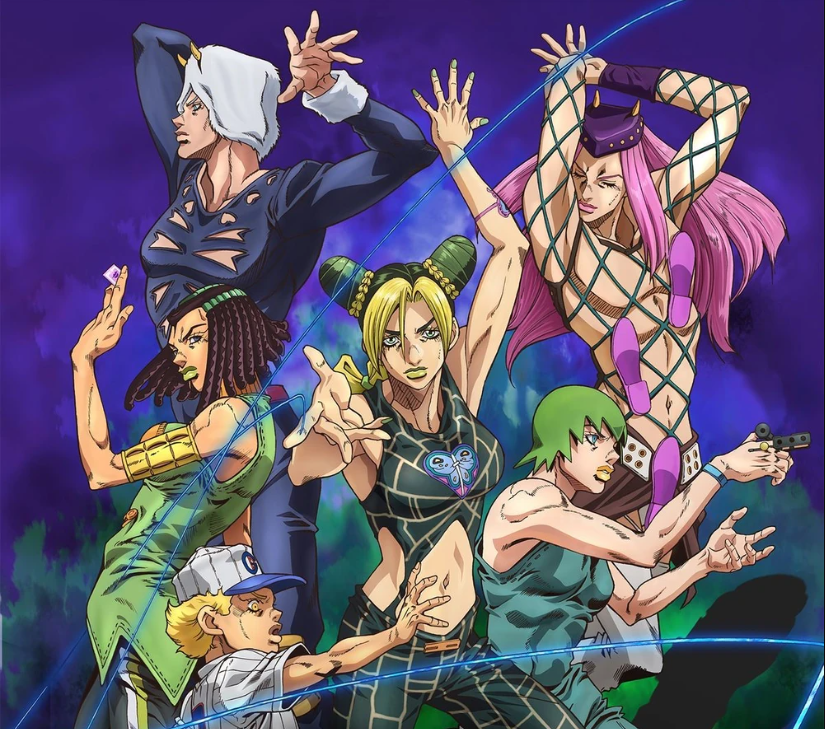
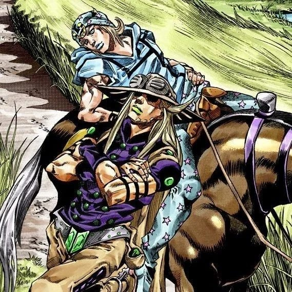
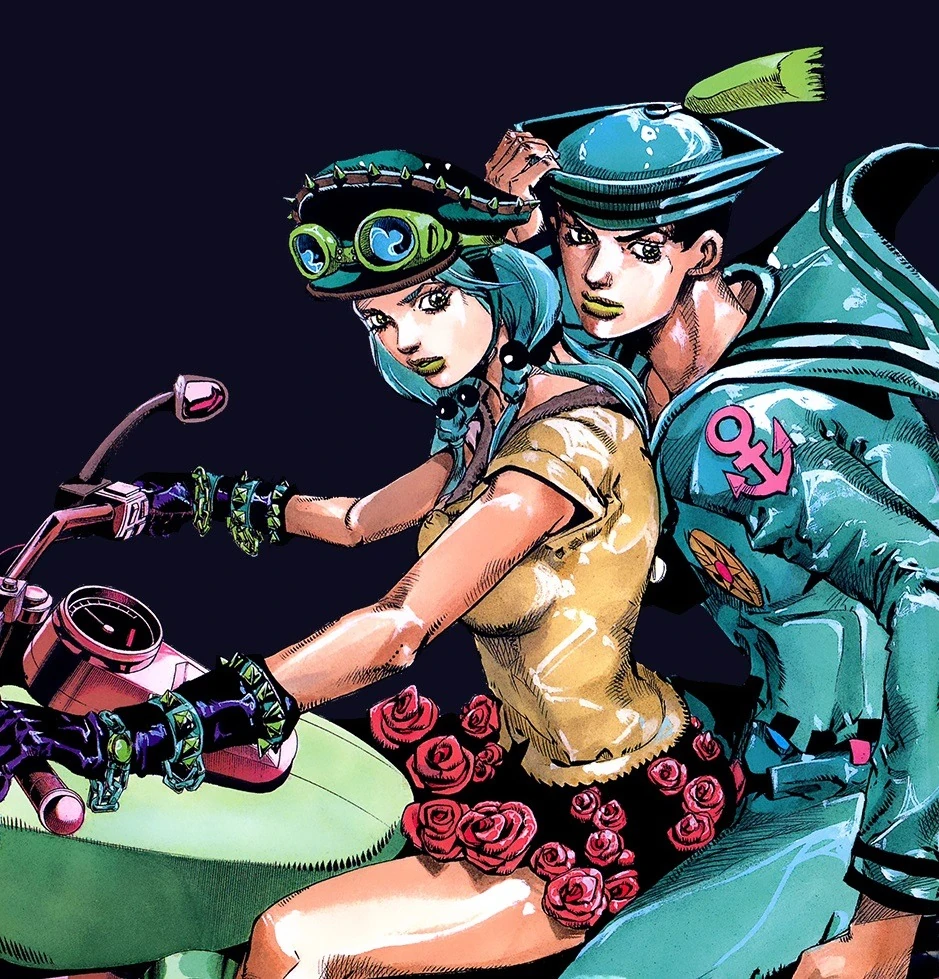
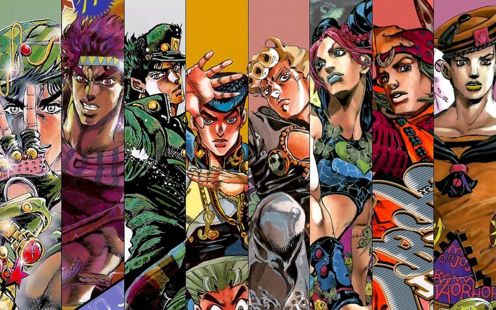

PERSONNAGES

- Jonathan Joestar
- Robert E. O. Speedwagon
- William Antonio Zeppeli

- Joseph Joestar
- Caesar Antonio Zeppeli

- Jotaro Kujo
- Joseph Joestar
- Kakyoin Noriaki
- Mohammed Abdul
- Jean-Pierre Polnareff
- Iggy

- Josuke Higashikata
- Okuyasu Nijimura

- Giorno Giovanna
- Bruno Bucciarati
- Guido Mista
- Narancia Ghirga
- Pannacotta Fugo
- Leone Abbacchio

- Jhonny Joestar
- Gyro Zeppeli

-
Jousuke Higashikata
- Yasuho Hirose

- Jolyne Cujoh
- Narciso Anasui
- Weza Ripoto
- Foo Fighters
- Emporio Alnino
- Ermess Costello
HISTOIRE
SAISONS
- Saison 1 : Phantam Blood
- Saison 2 : Battle Tendancy
- Saison 3 : Stardust Crusaders
- Saison 4 : Diamond is Unbreakable
- Saison 5 : Golden Wind
- Saison 6 : Stone Ocean
- Saison 7 : Steel Ball Run
- Saison 8 : Jojolion
EPISODES